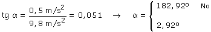

| La bolita, dentro del tren, tendrá la misma aceleración
que este: horizontal con módulo 0.5 m/s2
¿Qué fuerza produce esta aceleración horizontal?
Pues el hilo que se inclina de forma que la componente horizontal de su
tensión produce la aceleración horizontal
|
Las
líneas verdes y rojas son paralelas entre sí y delimitan
ángulos iguales |
| |
| |
|
|
|
Sustituyendo valores:

En la vida real no se observa
este efecto: un péndulo, dentro de un vehículo que
acelera, no se mantiene inclinado 'hacia atrás'. Esto se
debe a que la aceleración dura poco tiempo (Es el tirón
que se nota al arrancar) entonces el péndulo simplemente
se separará de la vertical y comenzará a oscilar |
|